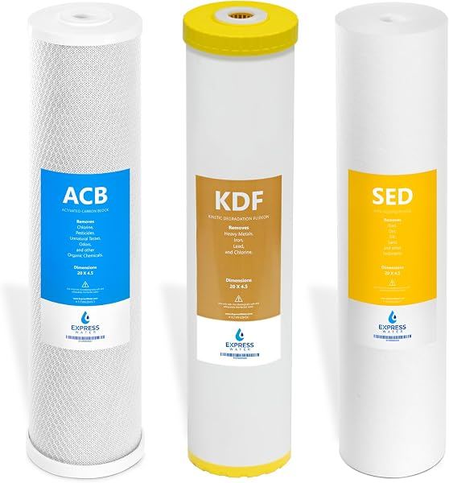

Whole House Reverse Osmosis Systems: The Complete 2026 Buyer's Guide
PureFlow Lab is reader-supported. We may earn a commission when you buy through links in this guide — at no extra cost to you. As an Amazon Associate, we earn from qualifying purchases. See our Disclosure for details.
Top Picks (At a Glance)
Quick links to the systems we recommend most in this guide. Prices shown on click-through.

iSpring RCB3P — 300 GPD Light Commercial Tankless
Amazon’s Overall Pick for this category. 300 gallons per day, tankless design, 1.5:1 pure-to-drain ratio (much better than older 4:1 systems), booster pump and pressure gauge included. Right starting point for a 2-3 person household committed to whole-house RO. ~$601.99 at last check.
Check Price on Amazon →
US Water Systems Defender Whole House RO
The surprise value pick of this guide. Complete pre-engineered whole-house RO system — pre-filtration, membrane, and pump matched and shipped together — for under $1,000. Comes from a specialty water-treatment manufacturer rather than a generic Amazon brand. ~$998.34 direct. [REPLACE with US Water Systems direct affiliate link once approved]
Step Up — Larger Homes

iSpring RCS5T — 500 GPD Commercial RO
Same brand and similar design as the RCB3P, stepped up to 500 GPD for 4+ person households or high-demand homes. ~$599.99 at last check.
Check Price on Amazon →Premium — Configurable Capacity

Crystal Quest Whole House RO (400-5,000 GPD)
For large homes or specialized contamination profiles where the off-the-shelf 300-500 GPD systems aren’t enough. Configurable from 400 to 5,000 GPD with storage tank options up to 550 gallons. [REPLACE with Crystal Quest direct affiliate link once approved]
The Honest Alternative Most Buyers Should Actually Consider

Express Water Whole House Heavy Metal Filter + Under-Sink RO Combo
Most homeowners searching “whole house RO” actually need this: a whole-house 3-stage carbon/sediment/heavy-metal filter for showering and laundry (~$187), plus a dedicated under-sink RO for drinking water (~$153). About $340 combined vs $5,000+ for true whole-house RO.
Check the whole house filter → | Check the under-sink RO →
TL;DR: Most homeowners don’t actually need whole-house reverse osmosis — they need a whole-house carbon/sediment filter for the house and a separate under-sink RO for drinking water. True whole-house RO is the right call for households with severe contamination (high TDS, brackish water, nitrate contamination, or specific health needs) who want every tap to deliver RO-quality water. If you’re in that group, the iSpring RCB3P at 300 GPD is the sensible Amazon-available pick for small-to-medium homes; the US Water Systems Defender at $998 is the best pre-engineered direct-from-manufacturer value; larger homes should step up to the iSpring RCS5T or configure a Crystal Quest system to spec. Budget $1,000-$5,000+ depending on capacity, expect to add a storage tank and booster pump for proper whole-house pressure, and plan on roughly $200-$400/year in replacement filters.
If you’ve ended up on this page, you’ve probably been digging through Reddit threads, manufacturer pages, and YouTube reviews trying to figure out whether whole-house reverse osmosis actually makes sense for your situation — and which system to buy if it does. Most of what’s out there is either a manufacturer pitching their own product or a hobbyist explaining what they bought without explaining why anyone else should buy it.
Here’s an honest version. We’ll cover when whole-house RO is the right answer (and when it isn’t), how to size a system for your house, what the real all-in cost looks like once you add storage tanks and pumps, and which systems are genuinely worth considering in 2026.
Reality Check: Should You Even Get a Whole House RO?
Before you spend $1,000-$10,000 on a whole-house reverse osmosis system, be honest with yourself about whether you actually need one. For most homeowners, the answer is no — and the right setup is much simpler.
Whole-house RO makes sense if:
- Your water has very high TDS (total dissolved solids), generally above 500 ppm, and a simple softener or carbon filter won’t be enough
- You’re on well water with nitrate, arsenic, or specific contamination that RO is uniquely suited to remove
- Someone in your household has a medical need for ultra-low-mineral water at every tap, not just the kitchen sink
- Your water source has variable quality and you want consistent purification regardless of what’s coming in
- You’re building a custom home and want one filtration system that handles everything
You probably don’t need whole-house RO if:
- Your main concern is drinking water quality. An under-sink RO costs $150-$500 and delivers the same drinking water for a fraction of the cost
- You have hard water but otherwise good municipal water. A water softener handles hardness directly; RO is overkill
- You want better-tasting shower water. A whole-house carbon filter ($200-$1,200) handles chlorine taste and odor much more cheaply
- You’re worried about lead. Replace your fixtures and add a certified lead-removal filter — RO alone isn’t the most cost-effective lead solution
The most common honest setup for a homeowner who wants comprehensive water quality is this: a whole-house sediment + carbon filter for the entire home (handles chlorine, taste, sediment, most chemical contaminants), an optional water softener if hardness is a problem, and a dedicated under-sink RO system for the kitchen for drinking and cooking water. That stack typically costs $400-$2,000 installed and covers 95% of what a single whole-house RO system would do — at a fraction of the cost.
Whole-house RO is the right answer when you’ve actually identified a contamination problem that needs RO at every fixture. If you haven’t, a simpler, cheaper system is probably the better call.
What “Whole House Reverse Osmosis” Actually Means
A whole-house reverse osmosis system isn’t a single appliance — it’s a multi-stage water treatment train that processes your entire home’s incoming water supply at the point of entry. Understanding the components is critical because most of what gets sold as “whole house RO” is actually one piece of a larger required setup.
A complete whole-house RO installation typically includes:
1. Pre-filtration. Before water hits the RO membrane, it needs sediment removal (typically 5 micron) and carbon filtration (removes chlorine, which destroys RO membranes). Skipping pre-filtration is the fastest way to ruin a $1,500 membrane in three months.
2. The RO membrane stage. This is the actual reverse osmosis — water pushed through a semipermeable membrane that rejects 95-99% of dissolved solids, heavy metals, and most contaminants. Rated by gallons per day (GPD) — 300 GPD for small systems, 500-1,500 GPD for residential, 2,000+ GPD for large homes or light commercial use.
3. Storage tank. RO systems can’t produce water fast enough to keep up with peak demand (turning on a faucet, running a shower). You need an atmospheric storage tank — typically 80-550 gallons depending on home size — to hold treated water for on-demand use.
4. Re-pressurization pump. Water leaving the storage tank is at atmospheric pressure (basically zero). You need a booster pump to deliver water to your fixtures at normal household pressure (40-60 psi).
5. Post-treatment. Pure RO water is slightly acidic and very low in minerals — which can be corrosive to copper plumbing and isn’t great for taste. A remineralization filter or alkaline filter is commonly added after the storage tank.
6. Drain connection. RO systems waste 1-4 gallons of water for every gallon they produce. That wastewater needs a dedicated drain line — typically routed to a floor drain, utility sink, or outside.
When you see a $600 “whole house RO system” advertised, you’re typically seeing just the membrane stage. By the time you add proper pre-filtration, a 220-gallon storage tank, a booster pump, post-treatment, and professional install, the all-in cost is usually $2,500-$8,000 for a properly designed residential system.
Whole-House RO vs Under-Sink RO
This is the decision most people are actually trying to make. Here’s the straightforward comparison:
| Factor | Whole-House RO | Under-Sink RO |
|---|---|---|
| Coverage | Every fixture | Kitchen sink only |
| Typical cost | $1,000-$8,000+ installed | $150-$700 installed |
| Wastewater ratio | 1:1 to 4:1 | 1.5:1 to 4:1 |
| Output capacity | 300-5,000+ GPD | 50-800 GPD |
| Storage required | 80-550 gallon tank | 3-gallon tank or tankless |
| Install complexity | Plumber + electrician | DIY in 1-2 hours |
| Filter replacement | $200-$400/year | $80-$150/year |
| Best for | Specific contamination at every tap | Drinking water purity |
For 90% of homeowners, an under-sink RO (~$150-$500 from Express Water, APEC, iSpring RCC7AK, or Waterdrop G3P800) plus a whole-house carbon filter for shower/laundry water is the better answer. You’re not drinking shower water — there’s no good reason to put it through RO. Save the thousands.
Whole-House RO vs Whole-House Carbon Filter
Whole-house RO is often confused with whole-house carbon filtration. They solve different problems.
Whole-house carbon filters (like the popular Aquasana Rhino at ~$1,123 or the budget Express Water Heavy Metal 3-Stage at ~$187) remove chlorine, chloramine, chemical taste/odor, sediment, and many VOCs. They don’t remove dissolved minerals, nitrates, heavy metals, fluoride, or microscopic contaminants. Cost: $200-$1,500.
Whole-house RO removes essentially everything — dissolved solids, heavy metals, nitrates, arsenic, fluoride, PFAS, and most pharmaceutical residues. It also removes beneficial minerals (which is why post-treatment remineralization is common). Cost: $1,000-$8,000+.
Unless you have a specific contamination problem that requires RO, a whole-house carbon filter handles what most homeowners actually care about — better-tasting water, chlorine removal, sediment, basic chemical filtration — at a fraction of the cost.
The Real Cost of Whole House RO
Manufacturer marketing pages quote the system price. Reality is meaningfully higher once you factor in everything you actually need.
System hardware (a complete setup):
- RO unit with membrane: $600-$3,500
- Storage tank (80-550 gallon): $300-$1,500
- Booster pump and pressure tank: $400-$900
- Pre-filtration (sediment + carbon): $200-$500
- Post-treatment (remineralization): $150-$400
- Drain connection materials: $50-$150
Installation:
- DIY (only if you’re comfortable with plumbing and electrical): $0 in labor
- Professional install: $800-$2,500 depending on location and complexity
Ongoing costs:
- Pre-filter replacement (every 6-12 months): $80-$150
- Membrane replacement (every 2-5 years): $200-$800
- Carbon post-filter (annually): $40-$100
- Wastewater (1-4x your treated water volume): variable
- Electricity for booster pump: $30-$80/year
5-year total ownership cost for a typical residential whole-house RO setup: $3,500 to $14,000.
That cost spread is the main reason most water professionals recommend the under-sink RO + whole-house carbon filter combo for homeowners who don’t have a specific reason to go whole-house. The combo runs about $600-$2,500 over 5 years and covers the same use cases for 80% of households.
Top Picks Detailed
iSpring RCB3P (300 GPD Light Commercial Tankless) — Most Amazon Buyers
The iSpring RCB3P is Amazon’s “Overall Pick” in this category and the sensible starting point for homeowners committed to whole-house RO but who want to keep the installation manageable. At 300 GPD, it’s marketed as “light commercial” but it’s the right capacity for a 2-3 person household. The 1.5:1 pure-to-drain ratio is dramatically better than older 4:1 systems — meaning you waste less than half as much water per gallon produced. Tankless design (no built-in atmospheric tank — you still want a buffer tank for peak demand). Booster pump and pressure gauge included. Compact footprint at this price point, and iSpring’s customer service has a strong reputation in water-treatment communities.
Pros: Tankless design saves space, 1.5:1 ratio means significantly less wastewater than competitors, capacity matches small home demand, iSpring is well-supported and parts are widely available, currently 4.4 stars from nearly 200 verified reviews. Cons: 300 GPD will struggle for households with 4+ people or high water usage. No pre-filtration included — you’ll need to add a sediment/carbon stage upstream.
Price at last check: $601.99. Check current Amazon price →
US Water Systems Defender Whole House RO — Best Pre-Configured Value
The Defender from US Water Systems is one of the few “complete system in a box” residential whole-house RO setups at this price point — pre-filtration, membrane, storage, and pump all matched and sold together for under $1,000. US Water Systems is a specialty water-treatment manufacturer (not a generic Amazon brand), and the system is engineered as a single coherent package rather than parts you piece together yourself.
The package eliminates the engineering work for homeowners who don’t want to size their own setup. You’re paying slightly more than building a comparable system from individual components, but the integration and support are worth the difference for most buyers.
Pros: Pre-engineered for residential use, complete package, US Water Systems has strong technical support and US-based phone support, dramatically more affordable than configured Crystal Quest setups for most residential needs. Cons: Less customization than a piece-by-piece build, ships from US Water Systems (not Amazon Prime).
Price at last check: $998.34. See on US Water Systems → [REPLACE with US Water Systems direct affiliate link]
iSpring RCS5T (500 GPD Commercial RO) — Larger Homes on Amazon
Same brand and similar design as the RCB3P, but stepped up to 500 GPD for larger households or homes with above-average water usage. The right pick if you have 4+ residents, a large home with multiple bathrooms, or you want headroom for future expansion. 4.6-star average from 300+ reviews — well-loved by buyers.
Pros: Significantly more capacity without doubling the footprint, same iSpring support ecosystem, higher rated than the RCB3P. Cons: Still needs separate pre-filtration and post-treatment for a complete setup. Slightly higher cost than the Defender for similar capacity.
Price at last check: $599.99. Check current Amazon price →
Crystal Quest Whole House RO (Configurable 400-5,000 GPD) — Premium / Custom
Crystal Quest sells what’s probably the most flexible whole-house RO platform available, configurable from 400 GPD all the way up to 5,000 GPD with storage tank options from 165 to 550 gallons and matched booster pumps. The price reflects that flexibility — expect $2,000-$8,000+ for a properly configured residential system, depending on options.
This is the right call if you’ve talked to a water-quality consultant, had your water tested, and need a system designed around your specific contamination profile and household usage. Crystal Quest will spec the membrane size, storage capacity, and pump output to match your situation rather than asking you to fit your house to an off-the-shelf system.
Pros: Truly configurable, high-capacity options for large homes, established brand with engineering support, 2500 GPD standalone configuration shown above. Cons: Premium pricing, requires more planning than a pre-bundled system, typically requires professional install.
Configure on Crystal Quest → [REPLACE with Crystal Quest direct affiliate link]
Express Water Whole House Filter + Under-Sink RO — Practical Alternative
This isn’t a true whole-house RO — it’s the honest alternative most homeowners should actually consider.
Express Water’s 3-Stage Heavy Metal Whole House Filter handles sediment, chlorine, and heavy metals (lead, iron, chromium, mercury, copper) for the entire home at ~$187, plus the company’s 5-stage under-sink RO for drinking water at ~$153. Combined, this stack covers what most people actually need from “whole-house RO” at roughly $340 instead of $1,000-$5,000.
Pros: Fraction of the cost, much simpler install, covers the practical use cases (drinking water purification + whole-house chemical/heavy metal removal). Cons: Not RO at every fixture. If you actually need RO water for showers or laundry, this won’t work. Replacement filter cost for the under-sink RO is a recurring expense.
Check the Whole House Filter on Amazon → Check the Under-Sink RO on Amazon →
How to Size a Whole-House RO System
Sizing is where most DIY whole-house RO installs go wrong. Undersize and you’ll run out of treated water under normal use; oversize and you’ve spent thousands more than necessary.
Rule of thumb: A typical household uses 80-100 gallons of water per person per day. For RO sizing, you typically need a system capable of producing your daily peak demand plus a 30% safety margin.
| Household Size | Daily Water Use | Recommended RO Capacity | Match in This Guide |
|---|---|---|---|
| 1-2 people | 80-200 GPD | 300 GPD | iSpring RCB3P or Defender |
| 3-4 people | 240-400 GPD | 500 GPD | iSpring RCS5T or Defender |
| 5-6 people | 400-600 GPD | 800-1,000 GPD | Crystal Quest configured |
| 7+ people, large home | 600+ GPD | 1,500-2,500 GPD | Crystal Quest configured |
Storage tank sizing: Storage tank should hold approximately one full day of household water demand. So a 3-4 person household needs a 200-300 gallon storage tank to handle morning shower demand without the RO system bottlenecking.
Pressure considerations: Inlet water pressure should be 40-80 psi for most residential RO systems. Below 40 psi, you’ll need a booster pump on the input side. Outlet pressure to the home from the storage tank requires a separate re-pressurization pump — this is non-negotiable for a true whole-house install.
Installation Requirements
Whole-house RO is not a weekend DIY project for most homeowners. Before you order a system, confirm you have:
- Space. A complete system with storage tank and pumps typically needs a 4’x4’ floor area plus 7’ of vertical clearance. Garages, utility rooms, and basements are the common locations.
- Drain access. Wastewater needs a dedicated drain — floor drain, utility sink, or outside line. Plan for 1-4 gallons of wastewater per gallon of treated water.
- Electrical. Booster pump needs a dedicated 120V outlet. Some larger commercial-grade systems require 240V.
- Plumbing access. The system installs at your home’s main water entry point, after the meter and before any branches to the house.
- Cold-protected space. RO membranes and storage tanks can’t freeze. Garage installs in cold climates need heated/insulated enclosures.
Realistic install timeline: 6-12 hours for a competent DIYer (plumber recommended for the main water cut-in), 4-8 hours for a professional crew. Plan to be without water for at least half a day.
Maintenance Schedule
| Task | Frequency | Typical Cost |
|---|---|---|
| Check pre-filter pressure gauge | Monthly | Free |
| Replace sediment pre-filter | Every 6 months | $25-$50 |
| Replace carbon pre-filter | Every 6-12 months | $40-$80 |
| Sanitize storage tank | Annually | $0 (DIY) or $150 (pro) |
| Test RO output TDS | Quarterly | $20 for TDS meter (one-time) |
| Replace RO membrane | Every 2-5 years | $200-$800 |
| Replace post-treatment carbon | Annually | $40-$100 |
| Inspect booster pump and tank | Annually | Free / part replacement as needed |
The single most common reason whole-house RO systems fail is skipping pre-filter replacement. Chlorine destroys RO membranes. A $40 carbon pre-filter protects a $400+ membrane. Don’t skip it.
Common Problems and Troubleshooting
Slow water at the tap. Almost always a storage tank or booster pump issue, not the RO itself. Check the storage tank pre-charge pressure (usually 7-10 psi when empty), verify the booster pump is engaging, and check for clogged post-filters.
TDS rising over time. Membrane is failing. Test TDS at the membrane outlet — if it’s consistently above 10% of your inlet TDS, the membrane needs replacement.
Excessive wastewater. Some wastewater is normal (1-4 gallons per gallon produced is typical). Excessive wastewater usually means a stuck flow restrictor or a failing automatic shutoff valve. Newer systems like the iSpring RCB3P at 1.5:1 ratio significantly reduce this vs older 4:1 designs.
Acidic / “flat” tasting water. This is normal for RO water — it’s stripped of minerals. Add a post-treatment remineralization filter ($80-$200) to restore mineral content and improve taste. Alkaline RO systems like the iSpring RCC7AK include this stage built in.
Membrane fouling. Common on well water with iron, manganese, or biological contamination. Solution is to upgrade pre-treatment — typically adding an iron filter or UV sterilization upstream of the RO.
Buyer Scenario Decision Matrix
Stop comparing systems in isolation. Match your situation to the right setup.
| Your Situation | Right Answer | Why |
|---|---|---|
| 2-person household, city water, mostly want better drinking water | Under-sink RO ($150) + whole-house carbon ($187) | Whole-house RO is overkill; under $400 handles 95% of needs |
| 4-person household, well water with mild iron issues | Pre-treatment for iron + iSpring RCB3P | Address iron first, then RO. RO without iron pre-treatment fouls fast |
| 4-person household, want a complete pre-engineered package | US Water Systems Defender ($998) | Pre-matched components save engineering work; best price-to-completeness ratio |
| 6-person household, high TDS municipal water | iSpring RCS5T or Crystal Quest 1000 GPD with 220-gal storage | Higher demand needs higher capacity and storage buffer |
| Custom build, large home, want one comprehensive system | Crystal Quest configured | Configurable systems sized to your house make more sense than fitting house to off-shelf system |
| Have heavy nitrate contamination in well water | Whole-house RO (any sized correctly) — this IS what RO does best | Few other filtration options handle nitrate at point of entry |
| Want to spend the least money and get “RO drinking water” | Under-sink RO only ($150-$500) | Whole-house is unnecessary for drinking-water-only use case |
5-Year Real Cost Comparison
A more useful way to think about this than sticker price:
| Setup | Year 1 Total | 5-Year Total | Cost Per Day |
|---|---|---|---|
| Under-sink RO only (Express Water RO5DX) | $300 | $650 | $0.36 |
| Whole-house carbon (Express Water 3-Stage) + under-sink RO | $500 | $1,300 | $0.71 |
| Aquasana Rhino + softener + under-sink RO | $2,200 | $3,800 | $2.08 |
| iSpring RCB3P whole-house RO (DIY install, with pre-filtration + storage) | $2,200 | $4,800 | $2.63 |
| US Water Systems Defender (DIY install) | $1,400 | $3,800 | $2.08 |
| Configured Crystal Quest setup with pro install | $7,500 | $13,000 | $7.12 |
A whole-house RO setup costs roughly 3-10x as much over five years as the under-sink-RO-plus-whole-house-carbon combo that covers most homeowners’ practical needs. The US Water Systems Defender genuinely changes this math — at $998, it’s roughly competitive with mid-tier alternatives on a 5-year basis.
FAQ
Is a whole house reverse osmosis system worth it?
For most homeowners, no. The combination of a whole-house carbon filter and a dedicated under-sink RO for drinking water handles 90-95% of typical water-quality concerns at 20-30% of the cost. Whole-house RO is worth it when you have specific contamination at every-fixture level — high TDS, nitrate or arsenic in well water, or a medical reason to need ultra-pure water throughout the home.
What’s the average cost of a whole house reverse osmosis system?
A complete residential whole-house RO setup — including pre-filtration, RO unit, storage tank, booster pump, post-treatment, and professional install — typically runs $2,500-$8,000. DIY install can save $1,000-$2,500. The new generation of pre-engineered systems like the US Water Systems Defender at $998 has meaningfully lowered the entry price for residential whole-house RO.
Will a reverse osmosis system remove nitrates?
Yes. RO is one of the most effective methods for nitrate removal, typically rejecting 85-97% of nitrate ions. For well water with measured nitrate above EPA’s 10 mg/L limit, a properly sized RO system at the point of entry is one of the standard solutions.
What is the downside of reverse osmosis?
Three main downsides: wastewater (1-4 gallons rejected for every gallon produced — though newer systems like the iSpring RCB3P at 1.5:1 ratio cut this significantly), removal of beneficial minerals (the water is slightly acidic and “flat” tasting unless remineralized), and ongoing maintenance cost ($200-$400/year in filter replacements). For drinking water alone, these trade-offs are minor; for whole-house applications, they multiply.
Does whole-house RO remove fluoride?
Yes. RO membranes reject 85-95% of fluoride ions. If fluoride removal is the primary goal, an under-sink RO is far more cost-effective than whole-house, since you only drink the water from one or two taps.
How long does a whole house RO membrane last?
Typically 2-5 years depending on incoming water quality, pre-treatment effectiveness, and daily use. Chlorinated municipal water without adequate carbon pre-filtration will destroy a membrane in 6 months. Well-treated water with good pre-filtration and reasonable usage routinely sees 4-5 year membrane life.
Can I install a whole house RO system myself?
Possible but not recommended unless you’re comfortable with plumbing, electrical, and water-treatment design. The main water cut-in alone typically requires sweat-soldering copper or PEX expansion fittings, plus a proper bypass valve. Most homeowners save themselves significant grief by paying a plumber for the install. Pre-engineered systems like the Defender are more DIY-friendly than custom-configured Crystal Quest setups.
Bottom Line: What Should You Actually Buy?
Most homeowners should skip whole-house RO and install the Express Water Whole House Filter plus the Express Water Under-Sink RO. Total cost around $340. This covers the practical use cases that drive 95% of “whole house RO” searches.
If you’ve actually identified a need for whole-house RO and want the best value, the US Water Systems Defender at $998 is the strongest pick — pre-engineered package, established water-treatment manufacturer, complete system in one box.
If you prefer to buy from Amazon for Prime shipping and easy returns, the iSpring RCB3P at $602 is the right starting point for small-to-medium homes. Step up to the iSpring RCS5T at $600 for 4+ person households. Add a 220-gallon storage tank, booster pump, and proper pre-filtration. Plan for $1,500-$3,000 all-in.
For larger homes or specialized contamination profiles, configure a Crystal Quest Whole House RO. Expect $2,500-$8,000+ for a complete residential setup. Use these for the cases where off-the-shelf 300-500 GPD systems aren’t enough.
Don’t underestimate the cost of storage, pumping, and pre-treatment. The membrane is the cheapest part of a properly designed whole-house RO setup.
Ready to buy?
If you’ve decided whole-house RO is the right call for your situation, check current pricing on the systems above. Your clicks keep these guides free.
Shop Whole House RO Systems on Amazon →
Found this useful? Share it with someone who’s trying to make sense of their water options.
Keep Reading
- Whole House RO vs Whole House Filter — which one you actually need
- Best Reverse Osmosis Systems for Home (Under-Sink Picks) — for the more common drinking-water-only use case
- Whole House RO vs Under-Sink RO: Which Should You Buy? — deeper decision framework if you’re still on the fence
- How Much Does a Whole House RO System Cost in 2026? — pricing breakdown for budget planning
- Best Whole House Water Filters (No RO) — the simpler whole-house alternative most homeowners actually need